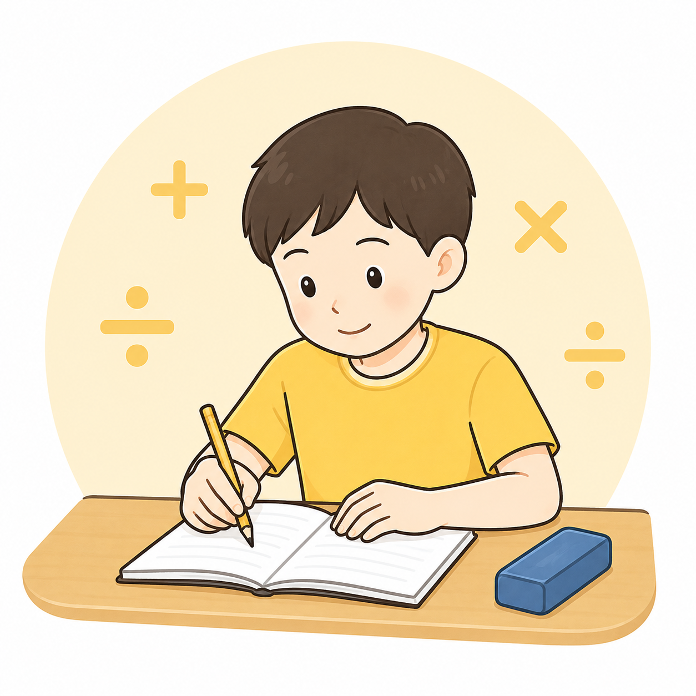
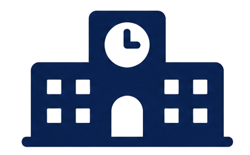
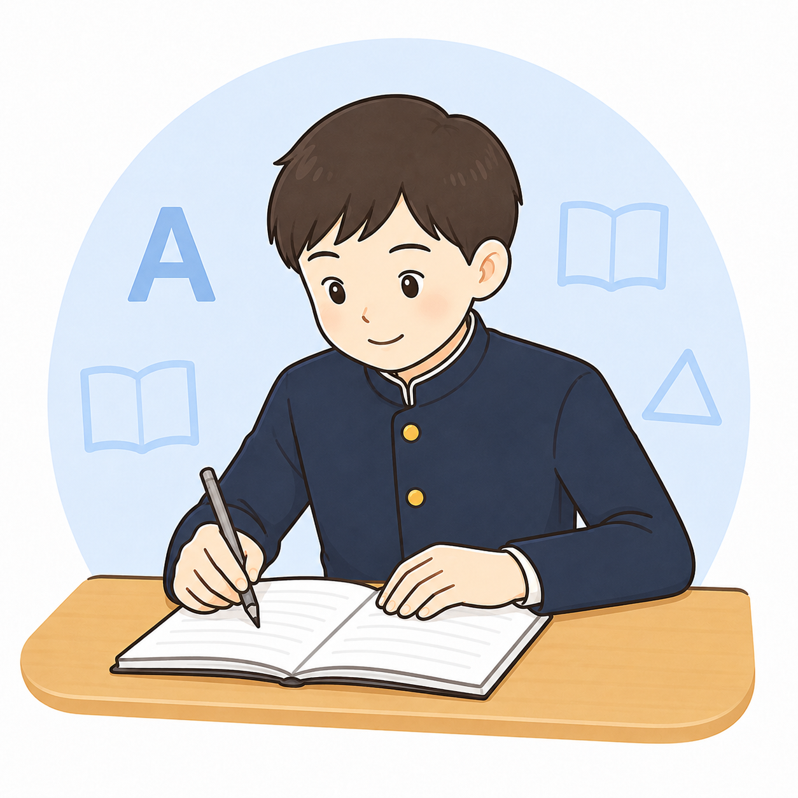
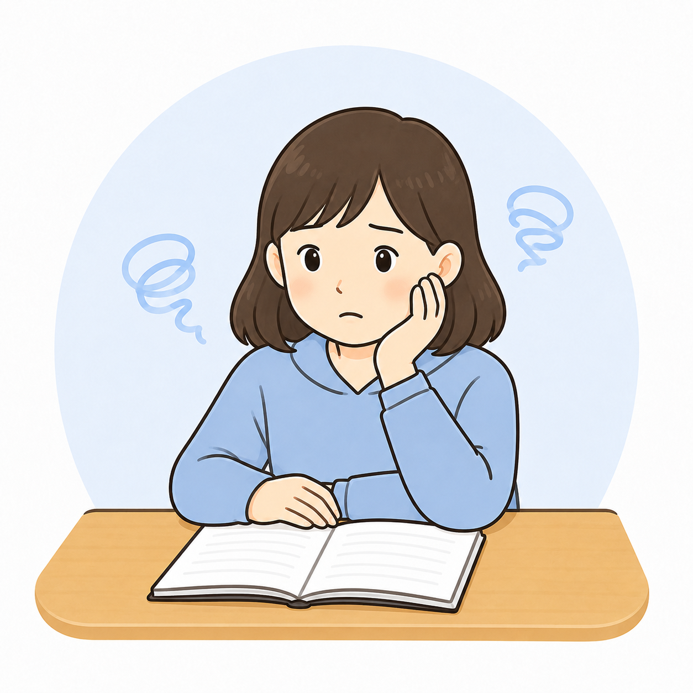

小学生
算数・国語の基礎定着、宿題習慣、文章題への苦手意識を少しずつ整えます。

空見坂市の小学生・中学生向け個別指導塾
学校の進度に合わせた個別指導と戻り学習で、
お子さまの「わからない」を一つずつ解消します。

空見坂第一中・若葉ヶ丘中・美月台中の定期テスト対策に対応。対象となる方
勉強が得意なお子さまだけでなく、勉強の始め方が分からないお子さまにも合わせて進めます。
算数・国語の基礎定着、宿題習慣、文章題への苦手意識を少しずつ整えます。

英語・数学を中心に、学校ワーク、提出物、定期テスト前の進め方まで見直します。

質問しにくい、授業が速い、分からないまま進むという不安を個別に拾います。

志望校と今の学力から逆算し、何から手をつけるべきかを整理します。
保護者の悩み
こはる個別アカデミーでは、まずお子さまのつまずきを確認し、必要なところまで戻って学習を進めます。
解決策
ただ授業を増やすのではなく、原因を見つけてから必要な単元に戻ることで、点数につながる勉強に変えていきます。
学校の進度、直近のテスト、宿題状況、苦手科目を確認します。
今の単元だけでなく、前学年・前単元まで戻って原因を探します。
テスト日程や部活を考慮し、無理なく続けられる計画にします。
選ばれる理由
今の単元だけでなく、前の単元まで戻って「どこで止まっているか」を見つけます。
近隣中学校の進度に合わせ、テスト前に必要な範囲を優先して対策します。
学習状況や次にやることを共有し、ご家庭でも安心して見守れるようにします。
宿題の進め方やテスト前の計画まで見直し、家でも勉強しやすい状態を作ります。
わからないところを責めず、一つずつ確認します。集団塾が合わなかったお子さまにも向いています。
数学だけ、英語だけ、テスト前だけなど、今必要な内容から無理なく始められます。
学校別テスト対策
空見坂第一中 / 若葉ヶ丘中 / 美月台中 / 空見坂第二中
学校ワーク管理、提出物チェック、予想問題、苦手単元の戻り学習、テスト後の解き直し。
テストまでに何を終わらせるか、家庭での声かけポイントも共有します。
コース
学習習慣づくり、算数・国語の苦手対策、学校内容の定着。
定期テスト対策、内申対策、苦手科目の戻り学習。
志望校から逆算した学習計画と、必要単元の集中対策。
夏期・冬期・春期に、苦手単元を集中して復習します。
季節講習
時期ごとの訴求は、この枠の見出し・期間・対象学年・料金目安を変更するだけで更新できます。
料金
苦手科目を1つずつ対策したい方向け。
定期テスト対策と学習習慣づくりにおすすめ。
学習状況の確認と、必要な学習提案まで行います。
入会金：通常 11,000円
教材費：学年・科目により必要な場合があります
管理費：月額 1,100円
兄弟割引：ご兄弟での通塾はご相談ください
申し込み前の安心

まずは教室の雰囲気と先生との相性を確認してください。

学年・科目・回数を確認し、月額目安を分かりやすくお伝えします。

部活・習い事・送迎の都合に合わせて曜日と時間を相談できます。
講師・教室紹介
勉強が苦手なお子さまほど、「わからない」と言える環境が大切です。こはる個別アカデミーでは、今の学力を否定せず、どこまで戻れば分かるようになるかを一緒に確認します。
学習習慣づくりと基礎定着を、やさしくサポートします。
学校の進度と定期テスト範囲に合わせて、必要な学習を整理します。
志望校から逆算して、今やるべきことを一緒に確認します。
授業で取り組んだ内容や理解度を、保護者の方へご報告します。
学校の進み具合やテスト範囲に合わせて、学習内容やペースを柔軟に調整します。
必要な科目・単元にしぼって、ご相談いただけます。まずはお気軽にご相談ください。
声・実績
テスト結果・学習姿勢・ご家庭での変化まで、個別指導で見えてきた声をまとめました。
計算の戻り学習から始めて、定期テストで点数アップ。
何をすればいいか分かるようになり、声かけが減りました。
長文の前に文法のつまずきを確認し、解き方を整理しました。
途中式の書き方から見直し、テストで落としやすい問題を対策しました。
集団塾では聞けなかったことも、個別だと聞きやすいようです。
読み方の順番を決めることで、問題に取り組みやすくなりました。
 結果の出方には個人差があります。まずは現在のつまずきから確認します。
結果の出方には個人差があります。まずは現在のつまずきから確認します。
無料体験の流れ
体験後に入塾をすぐ決める必要はありません。まずはお子さまの今のつまずきを確認します。
チャットbotまたはフォームから、学年と相談内容を送信。
苦手科目や学習状況を確認し、必要な単元を見つけます。
無理のない通い方、回数、料金目安をご提案します。
体験後にすぐ決める必要はありません。ご家庭でゆっくりご検討ください。
FAQ
はい、大丈夫です。体験後にすぐ入塾を決める必要はありません。
曜日・時間はご相談いただけます。部活や習い事との両立も考えてご提案します。
はい、1科目から受講できます。まずは苦手の原因を確認します。
無料相談時に、学年・科目・通塾回数を確認したうえで目安をご案内します。
事前にご連絡いただければ、可能な範囲で振替に対応します。
無料体験で教室の雰囲気や先生との相性を確認できます。
まずはつまずきの原因を確認し、必要な単元まで戻って学習することが大切です。
はい。料金、無料体験、曜日・時間などは右下のチャットbotからすぐ確認できます。
お問い合わせ
チャットbotからも、フォームからも問い合わせできます。デモでは送信後に完了メッセージを表示します。
アクセス
学校帰りや部活後にも通いやすい、駅近の個別指導教室です。